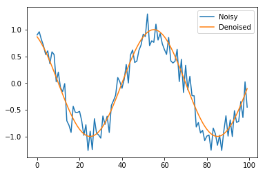

Signal denoising using RNNs in PyTorch ¶
In this post, I'll use PyTorch to create a simple Recurrent Neural Network (RNN) for denoising a signal. I started learning RNNs using PyTorch. However, I felt that many of the examples were fairly complex. So, here's an attempt to create a simple educational example.
Problem description ¶
Given a noisy sine wave as an input, we want to estimate the denoised signal. This is shown in the figure below.

Customary imports ¶
import numpy as np
import math, random
import matplotlib.pyplot as plt
%matplotlib inline
np.random.seed(0)
Creating noisy and denoised signals ¶
Let's now write functions to cerate a sine wave, add some noise on top of it. This way we're able to create a noisy verison of the sine wave.
# Generating a clean sine wave
def sine(X, signal_freq=60.):
return np.sin(2 * np.pi * (X) / signal_freq)
# Adding uniform noise
def noisy(Y, noise_range=(-0.35, 0.35)):
noise = np.random.uniform(noise_range[0], noise_range[1], size=Y.shape)
return Y + noise
# Create a noisy and clean sine wave
def sample(sample_size):
random_offset = random.randint(0, sample_size)
X = np.arange(sample_size)
out = sine(X + random_offset)
inp = noisy(out)
return inp, out
Let's now invoke the functions we defined to generate the figure we saw in the problem description.
inp, out = sample(100)
plt.plot(inp, label='Noisy')
plt.plot(out, label ='Denoised')
plt.legend()

Creating dataset ¶
Now, let's write a simple function to generate a dataset of such noisy and denoised samples.
def create_dataset(n_samples=10000, sample_size=100):
data_inp = np.zeros((n_samples, sample_size))
data_out = np.zeros((n_samples, sample_size))
for i in range(n_samples):
sample_inp, sample_out = sample(sample_size)
data_inp[i, :] = sample_inp
data_out[i, :] = sample_out
return data_inp, data_out
Now, creating the dataset, and dividing it into train and test set.
data_inp, data_out = create_dataset()
train_inp, train_out = data_inp[:8000], data_out[:8000]
test_inp, test_out = data_inp[8000:], data_out[8000:]
import torch
import torch.nn as nn
from torch.autograd import Variable
Creating RNN ¶
We have 1d sine waves, which we want to denoise. Thus, we have input dimension of 1. Let's create a simple 1-layer RNN with 30 hidden units.
input_dim = 1
hidden_size = 30
num_layers = 1
class CustomRNN(nn.Module):
def __init__(self, input_size, hidden_size, output_size):
super(CustomRNN, self).__init__()
self.rnn = nn.RNN(input_size=input_size, hidden_size=hidden_size, batch_first=True)
self.linear = nn.Linear(hidden_size, output_size, )
self.act = nn.Tanh()
def forward(self, x):
pred, hidden = self.rnn(x, None)
pred = self.act(self.linear(pred)).view(pred.data.shape[0], -1, 1)
return pred
r= CustomRNN(input_dim, hidden_size, 1)
r
Training ¶
# Storing predictions per iterations to visualise later
predictions = []
optimizer = torch.optim.Adam(r.parameters(), lr=1e-2)
loss_func = nn.L1Loss()
for t in range(301):
hidden = None
inp = Variable(torch.Tensor(train_inp.reshape((train_inp.shape[0], -1, 1))), requires_grad=True)
out = Variable(torch.Tensor(train_out.reshape((train_out.shape[0], -1, 1))) )
pred = r(inp)
optimizer.zero_grad()
predictions.append(pred.data.numpy())
loss = loss_func(pred, out)
if t%20==0:
print(t, loss.data[0])
loss.backward()
optimizer.step()
Great. As expected, the loss reduces over time.
Generating prediction on test set ¶
t_inp = Variable(torch.Tensor(test_inp.reshape((test_inp.shape[0], -1, 1))), requires_grad=True)
pred_t = r(t_inp)
# Test loss
print(loss_func(pred_t, Variable(torch.Tensor(test_out.reshape((test_inp.shape[0], -1, 1))))).data[0])
Visualising sample denoising ¶
sample_num = 23
plt.plot(pred_t[sample_num].data.numpy(), label='Pred')
plt.plot(test_out[sample_num], label='GT')
plt.legend()
plt.title("Sample num: {}".format(sample_num))

Bidirectional RNN ¶
Seems reasonably neat to me! If only the first few points were better esimtated. Any idea why they're not? Maybe, we need a bidirectional RNN? Let's try one, and I'll also add dropout to prevent overfitting.
bidirectional = True
if bidirectional:
num_directions = 2
else:
num_directions = 1
class CustomRNN(nn.Module):
def __init__(self, input_size, hidden_size, output_size):
super(CustomRNN, self).__init__()
self.rnn = nn.RNN(input_size=input_size, hidden_size=hidden_size,
batch_first=True, bidirectional=bidirectional, dropout=0.1)
self.linear = nn.Linear(hidden_size*num_directions, output_size, )
self.act = nn.Tanh()
def forward(self, x):
pred, hidden = self.rnn(x, None)
pred = self.act(self.linear(pred)).view(pred.data.shape[0], -1, 1)
return pred
r= CustomRNN(input_dim, hidden_size, 1)
r
# Storing predictions per iterations to visualise later
predictions = []
optimizer = torch.optim.Adam(r.parameters(), lr=1e-2)
loss_func = nn.L1Loss()
for t in range(301):
hidden = None
inp = Variable(torch.Tensor(train_inp.reshape((train_inp.shape[0], -1, 1))), requires_grad=True)
out = Variable(torch.Tensor(train_out.reshape((train_out.shape[0], -1, 1))) )
pred = r(inp)
optimizer.zero_grad()
predictions.append(pred.data.numpy())
loss = loss_func(pred, out)
if t%20==0:
print(t, loss.data[0])
loss.backward()
optimizer.step()
t_inp = Variable(torch.Tensor(test_inp.reshape((test_inp.shape[0], -1, 1))), requires_grad=True)
pred_t = r(t_inp)
# Test loss
print(loss_func(pred_t, Variable(torch.Tensor(test_out.reshape((test_inp.shape[0], -1, 1))))).data[0])
sample_num = 23
plt.plot(pred_t[sample_num].data.numpy(), label='Pred')
plt.plot(test_out[sample_num], label='GT')
plt.legend()
plt.title("Sample num: {}".format(sample_num))
Hmm. The estimated signal looks better for the initial few points. But, gets worse for the final few points. Oops! Guess, now the reverse RNN causes problems for its first few points!
From RNNs to GRU ¶
Let's now replace our RNN with GRU to see if the model improves.
bidirectional = True
if bidirectional:
num_directions = 2
else:
num_directions = 1
class CustomRNN(nn.Module):
def __init__(self, input_size, hidden_size, output_size):
super(CustomRNN, self).__init__()
self.rnn = nn.GRU(input_size=input_size, hidden_size=hidden_size,
batch_first=True, bidirectional=bidirectional, dropout=0.1)
self.linear = nn.Linear(hidden_size*num_directions, output_size, )
self.act = nn.Tanh()
def forward(self, x):
pred, hidden = self.rnn(x, None)
pred = self.act(self.linear(pred)).view(pred.data.shape[0], -1, 1)
return pred
r= CustomRNN(input_dim, hidden_size, 1)
r
# Storing predictions per iterations to visualise later
predictions = []
optimizer = torch.optim.Adam(r.parameters(), lr=1e-2)
loss_func = nn.L1Loss()
for t in range(201):
hidden = None
inp = Variable(torch.Tensor(train_inp.reshape((train_inp.shape[0], -1, 1))), requires_grad=True)
out = Variable(torch.Tensor(train_out.reshape((train_out.shape[0], -1, 1))) )
pred = r(inp)
optimizer.zero_grad()
predictions.append(pred.data.numpy())
loss = loss_func(pred, out)
if t%20==0:
print(t, loss.data[0])
loss.backward()
optimizer.step()
t_inp = Variable(torch.Tensor(test_inp.reshape((test_inp.shape[0], -1, 1))), requires_grad=True)
pred_t = r(t_inp)
# Test loss
print(loss_func(pred_t, Variable(torch.Tensor(test_out.reshape((test_inp.shape[0], -1, 1))))).data[0])
sample_num = 23
plt.plot(pred_t[sample_num].data.numpy(), label='Pred')
plt.plot(test_out[sample_num], label='GT')
plt.legend()
plt.title("Sample num: {}".format(sample_num))

The GRU prediction seems to far better! Maybe, the RNNs suffer from the vanishing gradients problem?
Visualising estimations as model improves ¶
Let's now write a simple function to visualise the estimations as a function of iterations. We'd expect the estimations to improve over time.
plt.rcParams['animation.ffmpeg_path'] = './ffmpeg'
from matplotlib.animation import FuncAnimation
fig, ax = plt.subplots(figsize=(4, 3))
fig.set_tight_layout(True)
# Query the figure's on-screen size and DPI. Note that when saving the figure to
# a file, we need to provide a DPI for that separately.
print('fig size: {0} DPI, size in inches {1}'.format(
fig.get_dpi(), fig.get_size_inches()))
def update(i):
label = 'Iteration {0}'.format(i)
ax.cla()
ax.plot(np.array(predictions)[i, 0, :, 0].T, label='Pred')
ax.plot(train_out[0, :], label='GT')
ax.legend()
ax.set_title(label)
anim = FuncAnimation(fig, update, frames=range(0, 201, 4), interval=20)
anim.save('learning.mp4',fps=20)
plt.close()
from IPython.display import Video
Video("learning.mp4")
This looks great! We can see how our model learns to learn reasonably good denoised signals over time. It doesn't start great though. Would a better initialisation help? I certainly feel that for this particular problem it would, as predicting the output the same as input is a good starting point!
Bonus: Handling missing values in denoised training data ¶
The trick to handling missing values in the denoised training data (the quantity we wish to estimate) is to compute the loss only over the present values. This requires creating a mask for finding all entries except missing.
One such way to do so would be:
mask = out > -1* 1e8
where
out
is the tensor containing missing values.
Let's first add some unknown values (
np.NaN
) in the training output data.
for num_unknown_values in range(50):
train_out[np.random.choice(list(range(0, 8000))), np.random.choice(list(range(0, 100)))] = np.NAN
np.isnan(train_out).sum()
Testing using a network with few parameters.
r= CustomRNN(input_dim, 2, 1)
r
# Storing predictions per iterations to visualise later
predictions = []
optimizer = torch.optim.Adam(r.parameters(), lr=1e-2)
loss_func = nn.L1Loss()
for t in range(20):
hidden = None
inp = Variable(torch.Tensor(train_inp.reshape((train_inp.shape[0], -1, 1))), requires_grad=True)
out = Variable(torch.Tensor(train_out.reshape((train_out.shape[0], -1, 1))) )
pred = r(inp)
optimizer.zero_grad()
predictions.append(pred.data.numpy())
# Create a mask to compute loss only on defined quantities
mask = out > -1* 1e8
loss = loss_func(pred[mask], out[mask])
if t%20==0:
print(t, loss.data[0])
loss.backward()
optimizer.step()
There you go! We've also learnt how to handle missing values!
I must thank Simon Wang and his helpful inputs on the PyTorch discussion forum .